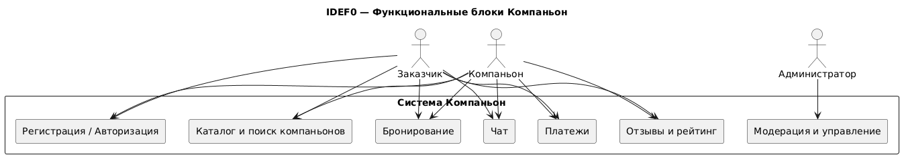
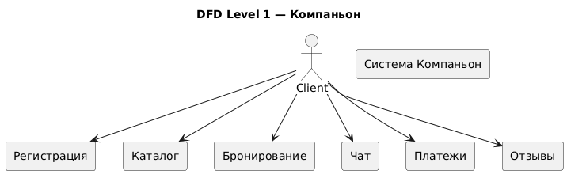

Техническое задание на разработку веб-сервиса «Компаньон»
Автор: Малюга Валерия Васильевна
Группа: НФИбд-01-23
Номер зачетки: 1132236050
Дата создания: 2025 год
Содержание
1. Общие сведения
Веб-сервис «Компаньон» представляет собой онлайн-платформу для поиска компании для прогулок, общения и участия в различных мероприятиях. Система ориентирована на пользователей, которым нужна компания, и тех, кто готов её предоставить в качестве компаньона.
Основные характеристики:
- Тип: Веб-сервис с элементами социальной сети
- Архитектура: Клиент-серверная, SPA (Single Page Application)
- Масштабируемость: Поддержка от 100 до 10 000 пользователей
- Доступность: 24/7 с плановыми техническими работами
- Язык интерфейса: Русский (планируется английский)
2. Функциональные требования
2.1. Пользовательские роли
| Роль | Описание | Права и возможности |
|---|---|---|
| Заказчик | Пользователь, ищущий компанию |
|
| Компаньон | Пользователь, предоставляющий услуги компании |
|
| Администратор | Управляющий системой |
|
2.2. Основные функциональные модули
Модуль 1: Регистрация и авторизация
- Создание аккаунта с выбором роли
- Подтверждение e-mail и телефона
- Восстановление пароля
- Двухфакторная аутентификация
Модуль 2: Профиль пользователя
- Заполнение анкеты с интересами
- Загрузка фотографий (до 5 шт.)
- Верификация личности
- Настройки приватности
Модуль 3: Поиск и каталог
- Фильтры: категории, теги, цена, рейтинг
- Геолокационный поиск
- Сохраненные поисковые запросы
- AI-рекомендации
Модуль 4: Бронирование
- Выбор даты и времени
- Подтверждение/отклонение заявок
- Календарь встреч
- Напоминания и уведомления
Модуль 5: Коммуникация
- Встроенный чат с историей
- Аудио/видеозвонки (планируется)
- Шаблоны сообщений
- Модерация переписки
Модуль 6: Платежи
- Оплата банковскими картами
- Электронные кошельки
- Вывод средств для компаньонов
- Система возвратов
Модуль 7: Рейтинги и отзывы
- Пятизвездочная система оценок
- Текстовые отзывы с модерацией
- Ответы на отзывы
- Рейтинговая таблица
Модуль 8: Администрирование
- Панель управления
- Статистика и аналитика
- Управление пользователями
- Настройки системы
3. Технические требования
3.1. Фронтенд
- Технологии: HTML5, CSS3, JavaScript (ES6+)
- Архитектура: SPA с hash-маршрутизацией
- Библиотеки: Vue.js или React (легковесные варианты)
- Адаптивность: Mobile-first подход
- Производительность: Загрузка страницы ≤ 2 сек
3.2. Бэкенд (планируется)
- Сервер: Node.js с Express или Python с FastAPI
- API: RESTful архитектура
- Аутентификация: JWT токены
- Кэширование: Redis для сессий
3.3. Базы данных
| Тип данных | База данных | Схема |
|---|---|---|
| Пользователи, заказы | PostgreSQL | Реляционная схема с внешними ключами |
| Отзывы, чаты | MongoDB | Документная модель для гибкости |
| Кэш, сессии | Redis | Key-value хранилище |
| Файлы, фото | Amazon S3 / Yandex Object Storage | Облачное хранилище |
3.4. Производительность
- Время отклика API: ≤ 200 мс
- Время рендеринга страниц: ≤ 300 мс
- Максимальное количество одновременных пользователей: 1000
- Доступность системы (uptime): ≥ 99.5%
4. Дизайн и интерфейс
4.1. Дизайн-система
Цветовая палитра:
Основной: #4a90e2
Акцентный: #2c6cb0
Фон: #f8f9fa
Успех: #28a745
Ошибка: #dc3545
Типографика:
- Основной шрифт: Arial, sans-serif
- Заголовки: 2.2em, 1.8em, 1.5em
- Текст: 16px, межстрочный интервал 1.6
- Мобильные устройства: Минимум 14px
4.2. Основные экраны
- Страница входа: Минималистичный дизайн, форма авторизации
- Главная страница: Категории, поиск, рекомендации
- Каталог компаньонов: Сетка карточек, фильтры слева
- Карточка компаньона: Фото, описание, кнопка бронирования
- Процесс бронирования: Пошаговый мастер
- Личный кабинет: Вкладки для разных разделов
- Чат: Список диалогов справа, переписка слева
4.3. Адаптивность
- Десктоп: ≥ 1200px — полнофункциональный интерфейс
- Планшет: 768px-1199px — упрощенная навигация
- Мобильный: ≤ 767px — гамбургер-меню, вертикальные списки
5. Безопасность и аутентификация
5.1. Защита данных
HTTPS
Все соединения защищены SSL/TLS
Хеширование паролей
bcrypt с salt ≥ 12 раундов
Защита от XSS
Экранирование вывода, Content Security Policy
Защита от CSRF
Токены для всех форм
SQL-инъекции
Подготовленные выражения, ORM
Логирование
Аудит действий пользователей
5.2. Верификация пользователей
- Уровень 1: E-mail и телефон
- Уровень 2: Фото с документом
- Уровень 3: Видеоверификация
- Для компаньонов: Обязательная верификация уровня 2
5.3. Модерация контента
- Автоматическая фильтрация нецензурной лексики
- Ручная модерация фотографий профилей
- Жалобы пользователей обрабатываются в течение 24 часов
- Система блокировок за нарушения
6. Моделирование системы
6.1. Функциональность (IDEF0)
Контекстная диаграмма верхнего уровня, показывающая основные процессы системы
6.2. Диаграмма потоков данных (DFD)
Уровень 0 (контекстный)

Уровень 1 (детализация)
Детализация основных процессов: регистрация, поиск, бронирование, оплата
7. Жизненный цикл системы
1
Планирование и анализ
- Исследование рынка и конкурентов
- Сбор и анализ требований
- Разработка концепции
- Оценка рисков
2
Проектирование
- Создание UML диаграмм
- Проектирование архитектуры
- Разработка дизайн-макетов
- Создание прототипов
3
Реализация
- Frontend разработка
- Backend разработка
- Интеграция модулей
- Написание математических моделей
- Разработка AI-компонентов
4
Тестирование
- Модульное тестирование
- Интеграционное тестирование
- Нагрузочное тестирование
- Тестирование безопасности
- Юзабилити-тестирование
5
Внедрение и поддержка
- Развертывание на сервере
- Обучение пользователей
- Мониторинг работы
- Техническая поддержка
- Обновления и доработки
8. Сроки и этапы разработки
| Этап | Срок | Результат | Ответственный |
|---|---|---|---|
| Анализ требований | 2 недели | Техническое задание | Аналитик |
| Проектирование | 2 недели | Диаграммы и макеты | Архитектор |
| Frontend разработка | 4 недели | Интерфейс пользователя | Frontend разработчик |
| Backend разработка | 4 недели | API и база данных | Backend разработчик |
| Интеграция | 2 недели | Рабочий прототип | Fullstack разработчик |
| Тестирование | 2 недели | Отчет о тестировании | Тестировщик |
| Внедрение | 1 неделя | Рабочая система | DevOps инженер |
| Итого | 4 месяца | Готовый продукт | Команда |
9. Результат
Итоговый продукт включает:
Техническая документация
- Полное техническое задание
- Диаграммы UML и DFD
- Руководство пользователя
- Руководство администратора
Исходный код
- Frontend приложение
- Backend API
- Конфигурационные файлы
- Скрипты развертывания
Математические модели
- Сети Петри для бизнес-процессов
- Модели систем массового обслуживания
- Модели системной динамики
- AI-модели рекомендаций
Отчеты
- Отчет о тестировании
- Экономическое обоснование
- План развития проекта
- Рекомендации по безопасности
Критерии приемки:
- ✅ Все функциональные требования реализованы
- ✅ Система проходит нагрузочное тестирование
- ✅ Ошибки безопасности не обнаружены
- ✅ Интерфейс соответствует дизайн-макетам
- ✅ Документация полная и понятная
- ✅ Система развернута и готова к использованию